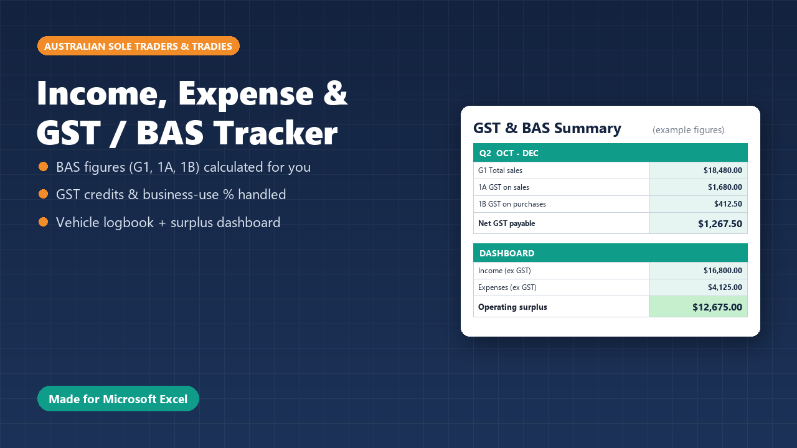

Sole trader GST estimate
Turn one period's sales and purchases into a rough GST figure. Use it to see the size of the cheque. Lodge the real BAS in ATO online services or through your accountant.
How the estimate is calculated
- GST-inclusive amount: GST is one-eleventh. $11,000 inclusive includes $1,000 GST.
- GST-exclusive amount: GST is 10%. $10,000 exclusive plus GST is $11,000.
- Net estimate = GST on sales minus GST on the purchases you entered.
With the numbers filled in (GST-inclusive): sales $11,000 give $1,000 GST, purchases $3,300 give $300 GST, net estimate $700 to pay.
What this leaves out
A real BAS is wider than this box. This estimate assumes every sale is taxable and every purchase you typed is fully creditable. It does not handle GST-free sales, input-taxed supplies, private use of purchases, capital purchases, fuel tax credits, or adjustments. Those change the figure.
Labels "1A style" and "1B style" mean "the GST portion", which is the idea behind BAS labels 1A and 1B. This page does not lodge anything and it does not fill in G1 or the other labels. The ATO's instructions are at ato.gov.au GST.
General information, not tax, legal or accounting advice. Check the period with your accountant or a registered tax agent before you lodge.

Want the whole quarter, not just one sum?
The Sole Trader GST & BAS Tracker (made for Microsoft Excel) keeps your invoices, payments and expenses in one workbook, works out GST only from the date you're registered, and gives a quarterly GST & BAS summary (G1, 1A, 1B) on a Cash or Accruals basis, plus a dashboard and vehicle logbook. Built for Australian sole traders with standard taxable sales and purchases. A record-keeping tool, not tax advice.
Get it - A$19